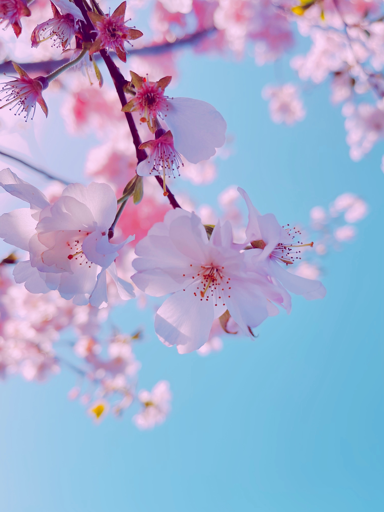
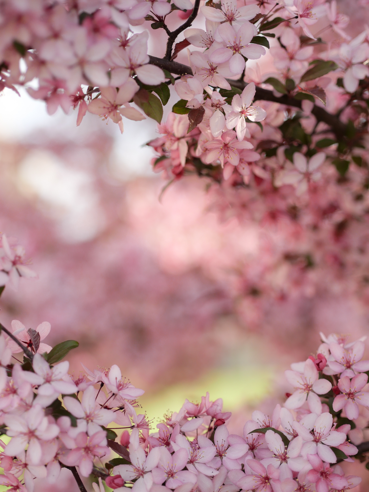

Spring flowers are important for pollinators, too. Many pollinators, including bumblebees and some butterflies, hibernate over winter and they rely on spring flowers to provide them with nectar and pollen when they emerge from hibernation. Nectar from spring flowers provides pollinators with the energy to fly and find a mate or nest site, while pollen from spring flowers helps bumblebees to start laying eggs for the next generation of bumblebees.

When choosing spring flowers it's important to think about the site you intend to grow them in. Most do best in sun or dappled shade – indeed they will flower sooner if grown in a sunny spot, as the soil they're growing in will be warmed by the sun. Consider also whether you're growing spring flowers in a pot or the ground, whether you want a temporary or permanent display, and if you're planting bulbs, which are usually planted in autumn.